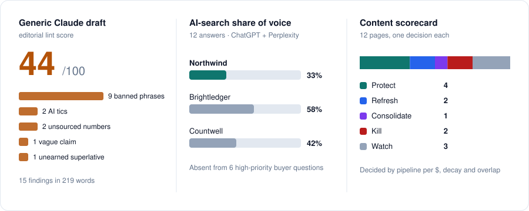

An operating system for a B2B content team. It turns one expert interview into a week of content, tracks whether buyers find you in ChatGPT and Perplexity, and decides what to keep or cut based on pipeline, not traffic.
14 years leading content for Reddit · Uber · DoorDash · Ramp · MetaMask · Brightwheel · Zenefits · Podium
Every team has the same model. The system around it is the advantage.
I gave Claude the prompt most content teams use, then ran the same company's expert interview through the engine.
The usual prompt
"Write a blog post about AP automation."
44/100 editorial score
Contradicts the company's own expert
Repeats the myth the expert wants to kill
Invents two statistics
Could carry any competitor's logo
The same model, inside a system
Grounded, checked, approved
Every angle quotes the expert. No quote, no angle.
Drafts can only use approved, sourced numbers
A linter blocks generic AI phrasing before an editor sees it
Targets the buyer questions where the brand is missing from AI answers
How it works
Agents handle the hours. Three decisions are locked in the code so nobody can skip them under deadline pressure.
Expert interview→Angles→Editor picks the angle→Brief→Expert approves the numbers→Draft + review→Editor ships→LinkedIn, newsletter, video, sales
Human checkpoints
AI-search tracker
Measures how often the brand is named and cited in ChatGPT and Perplexity answers to real buyer questions. Every gap becomes a brief.
Content scorecard
Gives every page one call: protect, refresh, consolidate, kill or watch. Decided by pipeline per dollar, not pageviews.
Editorial linter
Catches banned phrases, AI tics and unsourced numbers automatically, so editors spend their time on the argument.

Output from the worked example in the repo: a mid-market accounts-payable company.
What stays human
AI does most of the hours. None of the decisions.
Picking the angle. Deciding what the company believes is the job.
Approving every number. Each stat and quote has an owner before it reaches a draft.
The ship decision. The review informs it. A person makes it.
Anything under a person's name. Experts approve their own posts.
Killing content. The scorecard recommends. A person decides.
The interview. The best material comes from a follow-up a person thought to ask.
Track record
The same thinking, applied to real programs.
Thatch
Content Lead · May 2025–present
Grew ChatGPT visibility 871%, AI citations 130% and AI Overview mentions 1,400%. Cut $220K+ a year by replacing three agencies. Grew organic users 41% and conversions 28% through a full site migration. Built continuing-education programs approved in 21 states.
Right Percent
Director of Content Strategy · 2020–2025
Led teams of 15+ for venture-backed companies. Ran content strategy behind $200M+ in ad investment. Built AI content workflows for research, production and quality control.
Layover Marketing
Co-founder · 2015–2020
Built and ran a content company on SEO-led programs, landing pages and executive ghostwriting.
NYU Stern
Guest instructor · 2024–present
Teaches B2B content strategy and AI search to graduate students.